Coding
GDscript
Software and tools
Godot
Aseprite
Github
GDscript
Godot
Aseprite
Github
Interactive world - world can be modified heavily. Player can cut vegetation and destroy rocks, create fields, plant crops and add objects.
NPCs dialogue - NPCs can have dialogues with multiple answers that can lead to quests.
Complex inventory system - inventory has multiple tabs which take in account object type.
Player customization - player can create their unique player sprite from hair to skin color.
Player equipment - player can equip different tools and clothes to change its appearance.
Day/Night cycle - clock system that plays on crops growth and day/night cycle.
Trade system - player can buy and sell items to NPCs. Merchant have their own money purse than refills over time.
Local multiplayer - up to 2 players.
Inspired by Stardew Valley, I made a prototype in Godot engine trying to replicate the farming mechanics of Stardew Valley as well as its inventory.
I created a slots inventory (as in Minecraft, Terraria, Stardew Valley and a lot of games...) with multiple tabs. I also added a dialogue and trading mechanics, as well as a day/night cycle with a clock.
It helped me understand better how the Godot Engine works.
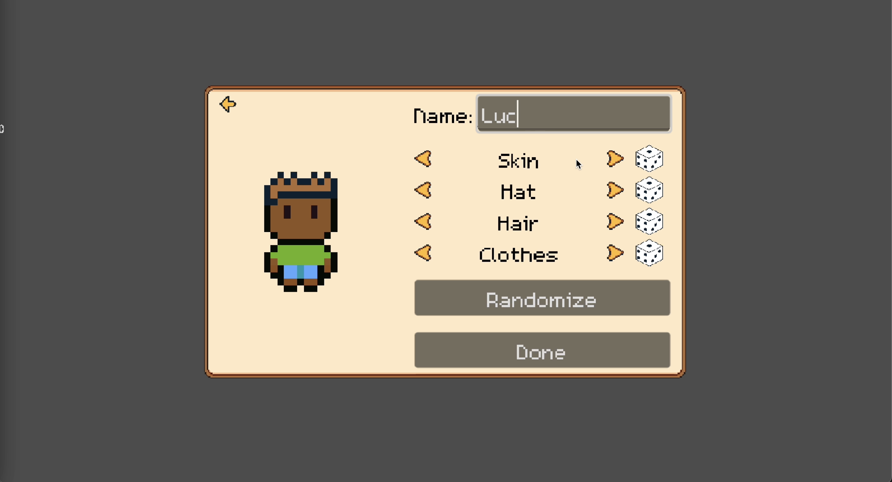
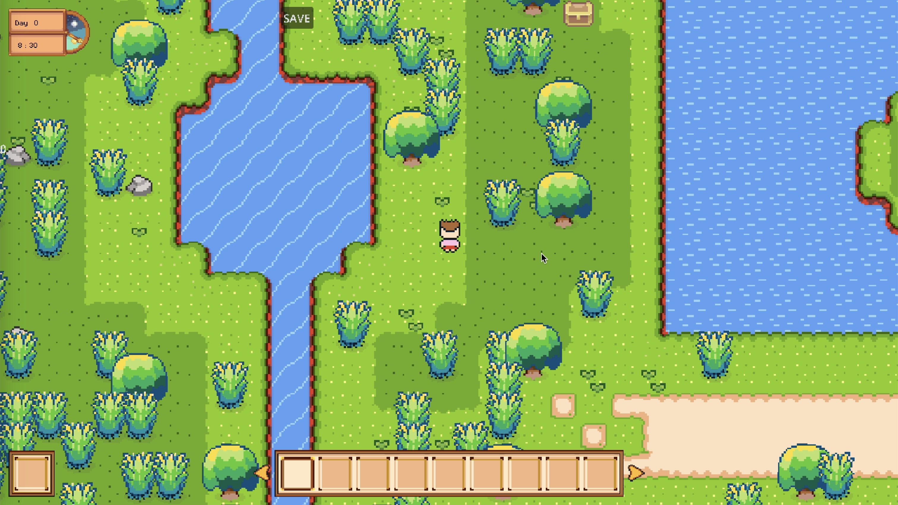
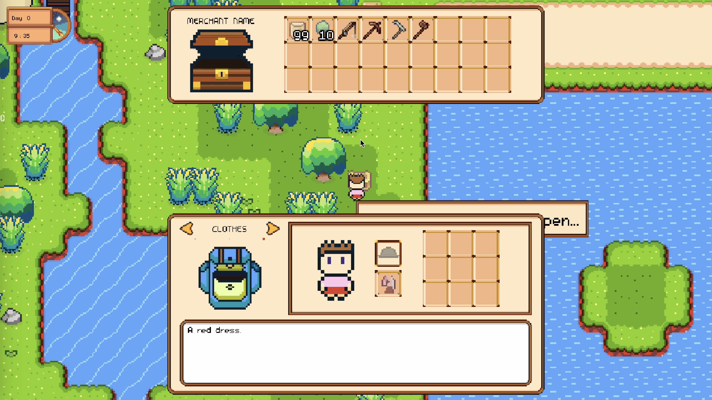
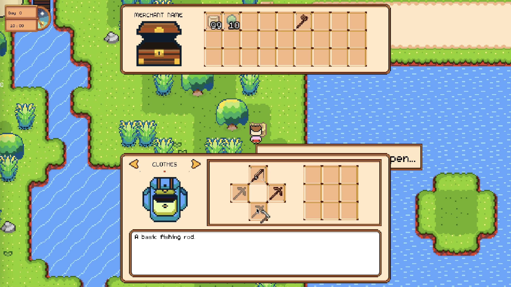
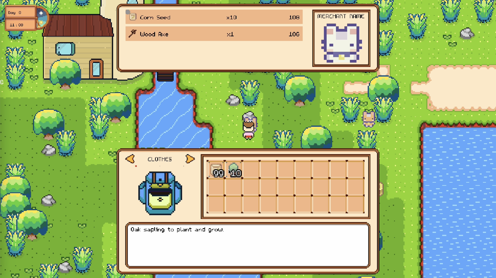
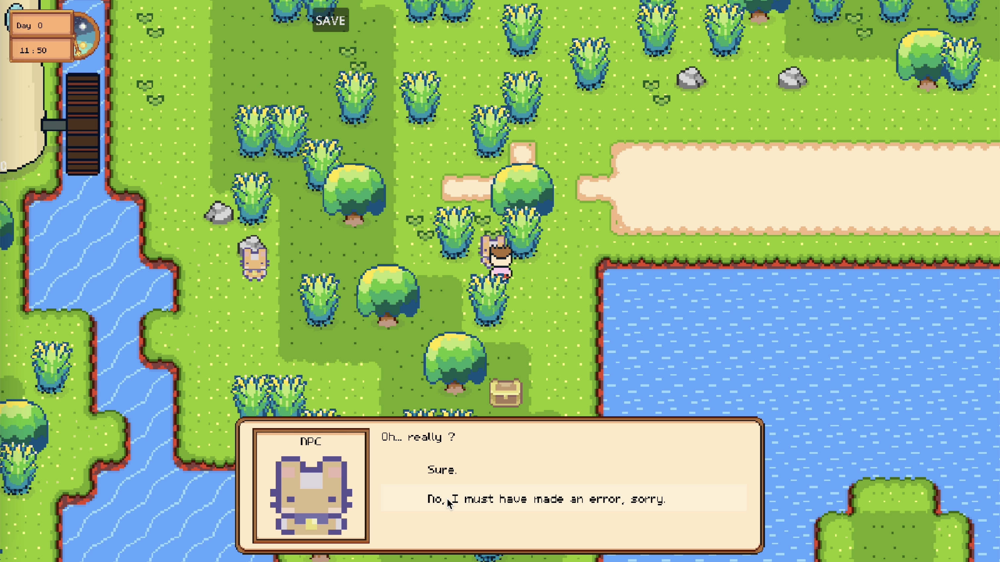
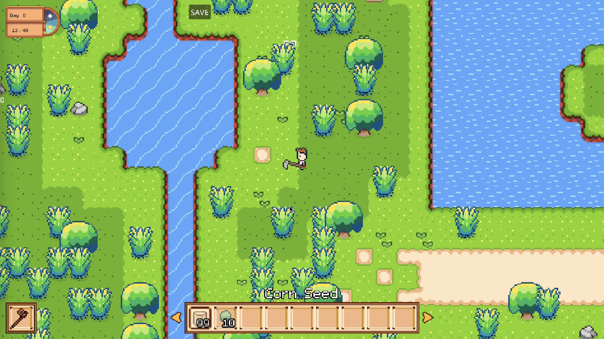
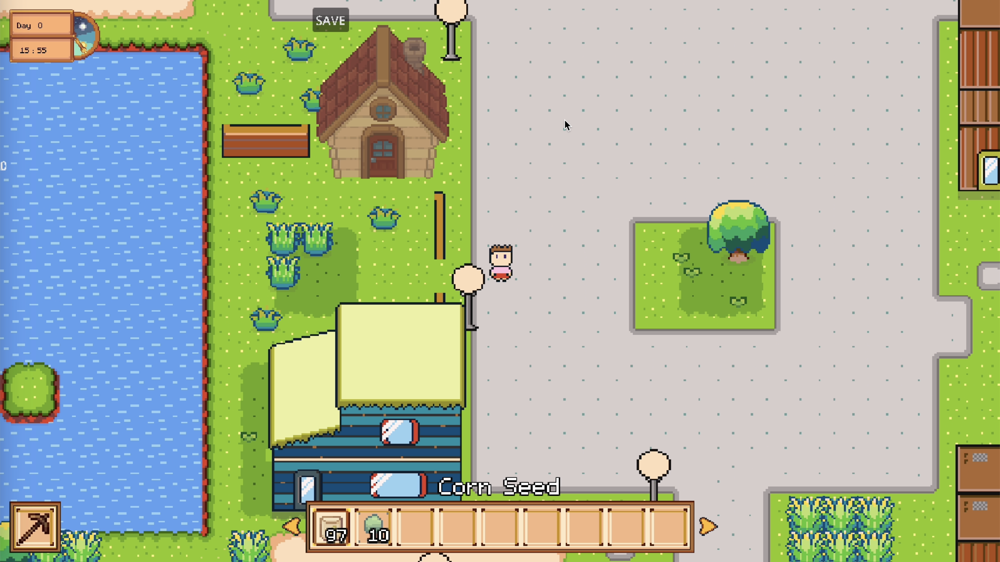
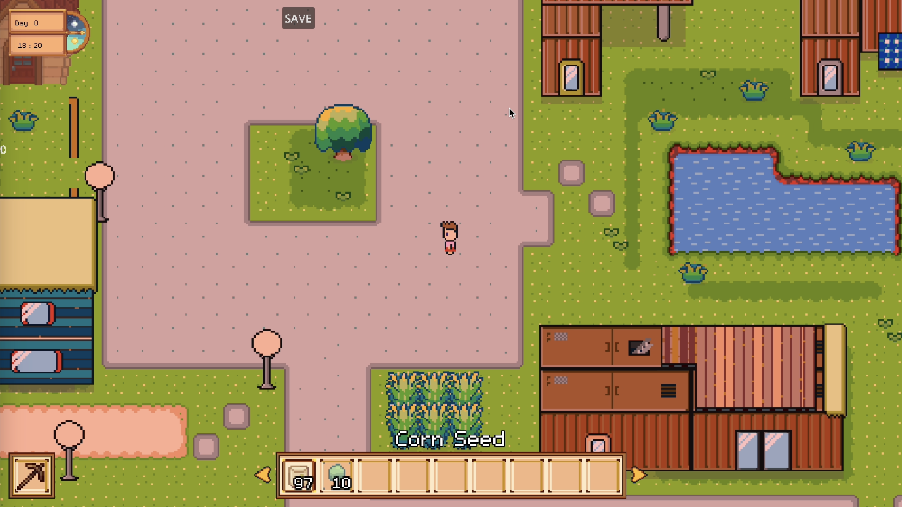
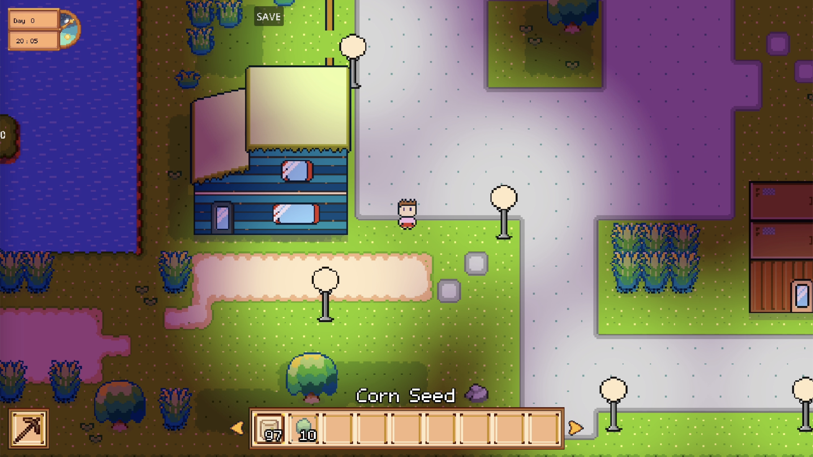
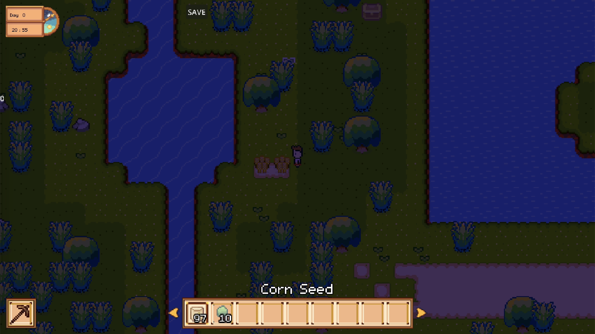